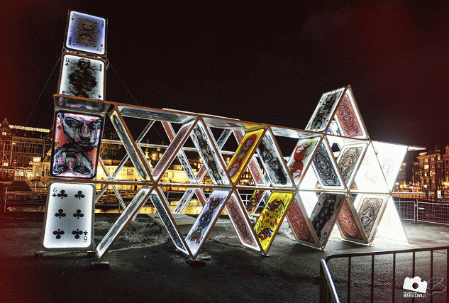

Amsterdam Light Festival
Spectaculaire kunstwerken
Ben jij al die koude winter dagen in Nederland zat? Bezoek de grachten van Amsterdam tijdens het Amsterdam Light Festival en laat ons jouw winterdagen verlichten. Tijdens het Amsterdam Light Festival zijn de 17e -eeuwse grachten van Amsterdam gevuld met mooie kunstwerken. Denk je dat Parijs de stad van het licht en romantiek is? Amsterdam bewijst dat het zich veel beter presenteert op dit vlak. Zowel bewoners als toeristen worden aardig verrast door de meer dan 40 licht installaties door Nederlandse en buitenlandse kunstenaars, designers en architecten, die de grachten van Amsterdam verlichten tijdens de winter dagen.
In deze rondvaart zul je ook merken hoe mensen met licht en ook bepaalde "viewpoints" iets fantastisch in elkaar kunnen zetten door middel van het kunnen manipuleren van de realiteit.
Rondvaart route
Met rederij Booot vaar je de complete route van het
Amsterdam Light Festival en zie je Amsterdam als nooit
van tevoren. Vaar met ons mee door de Amstel, de
Oosterdokkade en de beroemde Herengracht.
En meer...